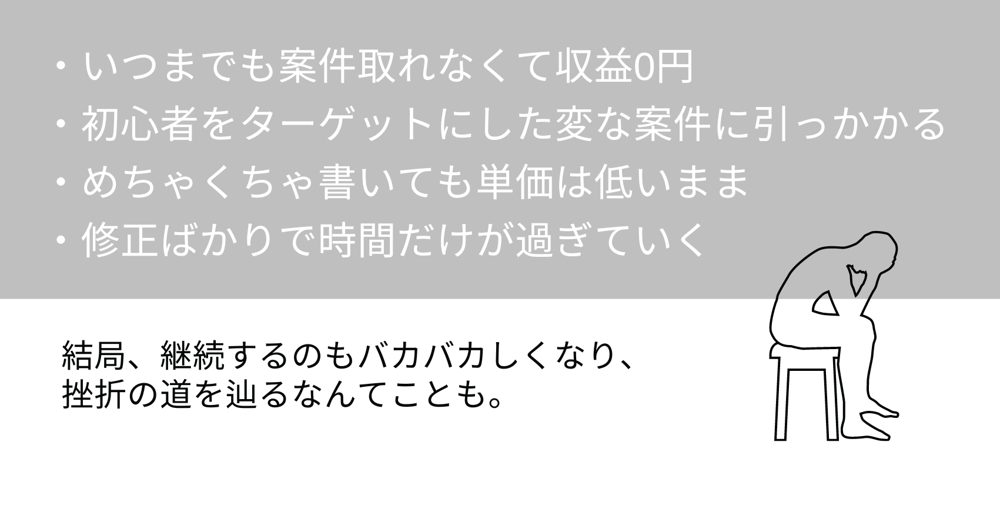

まさか、一生読まれないブログが存在するなんて…

個別相談を60名以上してきた中で、
こんなお悩みを聞きます。
こんな状態、正直イヤですよね。
ブログでこんな間違いしてない？

いつか上位表示して、多くの人に読んで
もらえると思っていませんか？
- 永遠に読まれない
- PV伸びない
- 収益はもちろんゼロ
なんてこと…実はよくある話で、
100記事書いたにも関わらず、
アクセスがほぼゼロの人もいます。
ブログを開設して、
ここまでくるのも
大変だったのに、
今まで必死に記事更新
してきた意味が…
結局、継続するのも
バカバカしくなり、
挫折の道を辿る人も。

失敗しないブログの作り方
とりあえず、
オシャレじゃなくてもいいし、
文章センスなんて無くてOK！
そして…
自分らしさだけじゃ勝てません！
まず最初に大切なことは…
Googleに好まれる「上位表示のため」の
記事の書き方
そう、SEOを意識した記事作成をすることが重要です。
以下の画像は、SEO対策したブログとしていないブログのPVです。
対策しているブログとしていないブログでは約30倍の差が生まれています。

SEOライティングができれば…
- むやみに記事更新しなくて済む
- センスが無くても人に読まれる文章が書ける
- どんな記事も大体上位表示する
- 自然とPVが右肩上がりに
あなたが寝ている間も…
書いた記事が集客してくれ、多くの人に
読んでもらえるようになります。
もう「書いた記事が読まれない…」
なんてことは無くなります！
なぜ、ブログスキルだけで収入を倍増できるのか？
だけど、現状は収入なんて
- 0かアドセンスの数百円
- アフィリエイト報酬なんて1件も発生しない
- 正直月1万円でもいいから副収入が欲しい
- PV伸びるのにいつまで待てばいい？
正直、こんな風に思う人も少なくありません。
どうせやるなら、
- 伸びるブログを確実に作りたい
- ブログスキルで他の仕事もしてみたい
- Webライティングも気になる
実は、こういう方って多いんです。
そして、ブログスキルは収入が倍増するほど
応用力抜群なんです！
まさか、収益0のブログスキルで
初月から収入が得られるなんて…
ブログの収入自体はすぐ伸びませんが、
ブログのスキルを使って、1、2ヶ月でも
収入を増やすことは可能なんです。
早い人は未経験から初月で1万円以上稼ぐ人も。
ブログスキルが既にある人は初月から
5万円の案件を獲得するチャンスも！
さらに、ブログスキルでお仕事をすれば、
上位表示の仕組みがよく分かって、自分の
ブログも伸びるようになり、最強の相乗
効果を発揮しW収入を得られるなんてことも。
それにしても、資産形成と自分の好きな時に
好きなだけ稼ぐスキルがついたら最強
ですよね。
さて、私がブログスキルで収益を2倍、
3倍とUPさせた方法が気になりませんか？
その前に、
壮絶な私のストーリーを少しだけ見て
いただけたら、明日からのあなたの行動が
変わるかもしれません。
私がブログを始めた理由
社会人になる前の私は、
「どうせ週5日働くなら、好きなことをして
働きたい！」
と、心に決めた私は大好きな洋服の勉強を
するため、服飾系の大学に通い、
アパレル企業に勤めることに。
憧れのアパレルデザイナーになって楽しい
毎日でしたが、給料が少なく、次第に
大好きな洋服が買えなくなりました。
このままじゃまずいと、洋服の知識や
好きなことをそのまま副業にできたらと思い、
ブログを始めてみるも…
案の定一人じゃ上手くいかず…
収入UPを求めて、仕方なく2回目の転職へ。
が、転職先ですぐパワハラにあってうつ病に。
休職していましたが、心機一転、
3年前から交際していた遠距離の彼と
同棲の話が出ていたので結婚前提で同棲を
スタートさせることに。
それに伴い、過去最短で退職を決意。
これから環境を変えて頑張ろうと思っていたのですが…
引っ越し直前で彼にフラれ、仕事や健康だけでなく結婚という明るい未来も失いました。
その他の実績としては…
- ブログ初心者向けセミナー開催
- 大手スクールのブログ講座メンター就任
- 無料個別相談数は60件以上
- SNSの知識を活かしてSNS運用代行も
- 個別コンサル生も全くの未経験から収益化
- 未経験で初月1万円以上稼ぐ生徒が続出
- 初月で1記事1万円のライティング案件獲得の生徒も

ちなみに、私は「日本語疎い」とか、
「何話してるか分からない！宇宙人！」とか
言われちゃう、ポンコツOLでした。
文章力なんて皆無、敬語も正直苦手で完璧にできません💦
こんな私でもブログのライティングスキルで
フリーランスになれたんです！
もうお分かりだと思いますが、
ブログのライティングスキルを使えば、
会社にも誰にも依存せずに
自分の力だけで収入を得られるのです。
私の今の理想は、今のビジネスをもっと大きくして、
好きな場所で好きなことを仕事にする仲間を増やすこと。
好きなことを仕事にしたいと、一生懸命に頑張る人が
いる反面、ブラック企業で現実に絶望したり、
やりたいことを諦める人も多いのは事実。
憧れるような仕事ってなぜかブラック企業多いんです。
でも、一度きりの人生。本当はどれも諦めてほしくない！
好きなことに向かって一生懸命頑張る人は素敵です✨
そういった人たちに夢を与えられるようになりたい。
本来は、誰もが持っている
「自由な人生を生きるための力」を私の手で一人でも
多く増やせたらと思います。
あなたもブログスキルを獲得すれば、
「資産構築や好きな時に好きなだけ稼げる」が実現！
しかも、オンラインだから人間関係や場所を気にしなくてもOK。
ブログ収益ゼロでも大丈夫。
あなたのブログスキルで案件取れます！
1つ以上当てはまりますか？
上記項目が一つ以上当てはまるのであれば、
このまま読み進めてください。
今、ブログをやっている人、やろうと思っている人で、
上記のように思っている人は多いかもしれません。
確かに、ブログは半年以上収益ゼロも普通ですし、
正しい記事の書き方を知らないと100記事以上書いても
永遠に収益ゼロです。
そんな中、ブログを書き続けるのは不安ですよね。
できれば、初月から安定的に副業収入を得たい
というのが本音ではないでしょうか。
あなたは本来、
もっと稼げるスキルを持っている人なんです。
でもまだ、それに気づいていないだけ。
そこで、、
副業に失敗したくないあなたへ
自宅で確実に稼ぐとっておきの方法
をここで紹介いたします！
稼ぎながらブログスキルも磨く
2度美味しいビジネスモデルとは？
それは、企業のメディアを代わりに執筆する
Webライティングというお仕事です。
1記事いくらといった形で書いた記事分だけ
報酬をいただきます。
ブログと違ってやった分だけ必ず収入になります。
ブログと密接な関連があるにも関わらず、
意外と知られていないので、詳しくご説明しますね。
Webライティングの特徴
- やったらやった分だけ稼げる
- 再現性が高く、失敗しにくい
- これまでのスキルや経験を活かせる
- ブログ記事の書き方をがっつり習得できる
- 人間関係や時間、場所に関係なく働ける
- 特別なアプリやソフトは一切不要
- 応用してお仕事の幅を広げやすい
- 専門知識や資格がなくてもできる
ですが、Webライティングと聞くと…
このようなイメージをお持ちの方も少なくないです。
「一度挑戦したことがあるけど、1記事500円だった…」
といった方もいたそうです。
ですが、心配しないでください。
Webライティングは誰にでも取り入れやすい
「稼げる副業」です。
多くの人は独学で正しい知識もなく、
自己流でWebライティングを始めてしまうので、
「稼げない」「単価安すぎ」で終わってしまうのです。
Webライティングには正しいやり方や流れがあり、
それに沿って進めていかなければ、
いくら再現性の高い副業と言っても稼げずに終わってしまいます。
では、どうするべき？
この流れでやっていくことで、
確実に単価を上げ、収入を安定させます

これが理解できると、こんなことができるように！
-
- 伸びるブログの書き方を学びながら稼げる
-
案件をこなすことで、企業サイトもやっている正しい記事の
書き方を習得できるから、伸びるブログが書けるようになります。
その他、案件を通して企業サイトの戦略が分かるので、
記事を書くたびにブログ知識も報酬も得られ、
1つのスキルで2度嬉しい！
-
- 未経験でも初月から1万円以上が叶う
-
ブログなんて全然やったことない！て人でも、
案件は初月から取れて月1万円以上稼いでいます。
そして、ブロガーの人はもっとハイレベルの案件を目指せます。
過去の生徒実績や案件の取り方テンプレを使って、
案件獲得の壁を越える！
-
- 家にいても安定して収益化できる
-
ライティングスキルを身につければ、場所も時間もとらわれずに
お仕事ができます。さらに、継続案件が獲得できれば、
毎月お仕事がもらえるので安定して稼ぐことが可能。
さらに、スキルを応用していけば、ブログや他のビジネス展開も
できるので、家にいながら収入UPが叶います。。
-
- ブログと違い、再現性が高く稼げる
-
ブログは何ヶ月も収益0で不安なまま走り続けなければならない
けど、Webライティングは案件さえ取れれば初月から稼げます。
どんな副業よりも再現性が高いから、
これまで副業で失敗してきた人にもおすすめ。
-
- ディレクターや講師で月30万も夢じゃない
-
Webライティングとブログを掛け合わせて、月30万でもいいし、
Webライティングを極めてWebディレクターになれば、
構成案だけで数万の仕事や講師業で数十万と稼ぐことも可能です。
ライティングのスキルは、応用を利かせることで、
幅広い仕事ができるので食いっぱぐれることはまずありません。
収益0ブロガーが初月から稼げる
ライティング指導室
～Meライト＋～
これまでブログを続けてきても、
なかなか稼げなかったあなたへ
たとえ、今あなたのブログ収益がゼロだとしても、
ブログを開設し、これまで記事を書き続けた
そのスキルを馬鹿にしてはいけません。
ライティング指導室は、現場で使える
「実践的なWebライティング」を学び市場価値を高め、
可能性を最大化させて人生をデザインしていく
特別な学びの場のことです。
この講座では、あなたが今持っているブログスキルを
現場で使えるよう応用し、最大化させ、
月3〜30万円の収入を目指していきます。
再現性98％の実力派スクールです！
ライティング指導室に入った生徒さんほとんどが、未経験でも初月から月1万円以上稼いでいます。副業で失敗したくないと思っている方や確実にコツコツやっていきたいと考えている方には全力でおすすめします！
個別相談で詳細を聞くライティング指導室の特徴
5〜15分前後の動画でスキマ時間にサクサク学べます。また、案件をすぐに取りにいき、案件をこなしながら実践的に学習ができます。学習したのに案件が取れないなんてことはあり得ません。
ZOOMでの直接指導があるので、動画で分からなかったところの疑問も解決できます。ZOOMでは、ライティングノウハウ以外に個人で稼ぐためのマインドやネットでは出てこない稼ぎ方の体験談などリアルな情報まで教えてもらえます。
執筆の添削や案件獲得で分からないところを気軽に聞けます。初めてのライティングや案件獲得は不安なことがいっぱいですが、クライアントとのメッセージのやり取りまで細かくサポートいたします。


ファーストライティングクラス
まずは0→1を達成したい人向け
在宅で月3〜5万円を安定的に稼ぐスキルを身につけます。初月からクラウドソーシングで案件を獲得しながら、アクセスUPできるブログ記事の書き方も習得可能。

フリーライティングクラス
在宅で月10万以上稼ぎたい人向け
在宅で月10万円を獲得するスキルを身につけます。フリーランスとしても稼いでいくことができるスキルを伝授。1記事1万円以上の高単価案件の獲得を目指します！
マスターライティングクラス
会社員以上の収入が欲しい人向け
在宅で月30万円以上稼ぐスキルを身につけます。指導までできるハイレベル文章術やSNS活用など、10種類以上の幅広いお仕事ができるようライティングの応用術を伝授。
今回限りの豪華特典
- 一緒に頑張る仲間ができるコミュニティ付き
- 実証済みの案件獲得テンプレ
- 動画で分かりやすい添削サポート
- お仕事依頼させていただきます
- 実証済みの案件獲得テンプレ
ライティング×Twitterの コンテンツ販売が学べる動画40本 プレゼント！
ライティングとSNSを組み合わせながら、在宅で稼ぐスキルを爆増させるコンテンツサイトを丸々プレゼントします！ただし、この特典、太っ腹すぎるのでプレゼントは1週間以内に無料カウンセリングを予約された方のみとなります。
今すぐ予約するこのスキルを手に入れたら、
あなたは3ヶ月後には月3万円以上稼げていて、伸びるブログのスキルも手に入ります。
1年後にはブログとライティングのW収入で安定収入を獲得。
会社を辞めることもできるかも。
参加方法
参加方法は、下のボタンから無料カウンセリングの予約をしてください。無料カウンセリングはZOOMで行いますので、全国どこからでも参加が可能です。
今回の企画は大々的なものになっています。そのため、参加を希望する全員を指導することは物理的に厳しいです。申し訳ございません。
また、副業の悩みは人それぞれ。一緒に頑張って成果の出せる人かどうかや、本当にライティング指導室が最適な人かどうか判断するために、一度個別で無料カウンセリングをさせていただきます。
個別でお話しすることで、よりライティング指導室のことが分かりますし、あなたの努力の方向性や私がどんな人柄かも分かっていただけるので、安心してライティング指導室に参加することができます。
生徒さんの声と実績
初月から…

追伸
私はライティングを０から学ぶことで、人生が変わりました。周りにフリーランスや経営者はおらず、誰にも相談できない中、個人で稼ぐ方法を模索しては失敗の繰り返しが本当に辛かったです。
そして、やるしかない状況に追い込まれ、初めて人から教わることの大切さに気付きました。未経験のことを独学でやるなんて到底無理なのに、ずっと気づけずに無駄な時間を過ごしていたのです。
それに気づいてからは、1年でいくつものコンサルやスクールを受講し、今では毎日、好きな時間に好きな場所で好きな仕事だけをやれるようなフリーランスになれました。
ここまで変われたのは、沢山のスキルを教えてくださった先生たちのおかげです。 本当に知識さえ習得し、実践できれば人生は変えられます。
「私に出会った人には、全員、なりたい自分になってほしい」 心からそう思っています。
本来のあなたはこんなもんじゃない！ 素敵な可能性に溢れているんです。あなたは、まだそれに気づいていないだけ。
繰り返しますが、今回の企画はここ数年、再現性を高めるため、私が何度もテストして準備してきた本気のサポート企画です。
応募の際もぜひ、本気で自分を変えるつもりで応募していただきたいです。
私もそれにお答えして、全力でサポートさせていただきます。 一緒に「なりたい理想の自分」を叶えましょう！
カウンセリング予約はこちら
予約する